Son los triángulos clásicos, en los que sus tres lados miden lo mismo. Sus tres ángulos internos también son iguales, cada uno de 60°.
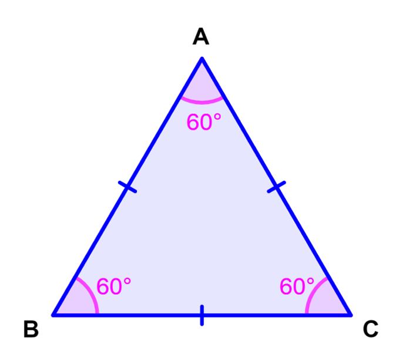
Triángulos isoceles
Tienen dos lados iguales. Los ángulos opuestos a los lados iguales también son iguales. Esto significa que en un triángulo isósceles hay dos lados y dos ángulos iguales.
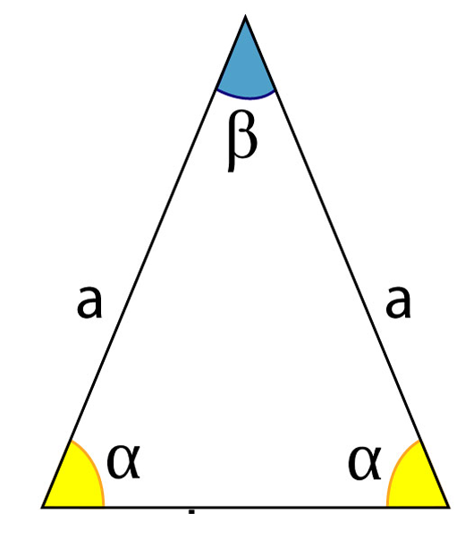
Triángulos escalenos
Son triángulos cuyos 3 lados y por ende 3 ángulos son totalmente diferentes.
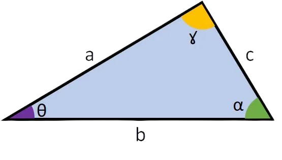
Tipos de triángulos por sus ángulos
Triángulos acutángulos
Todos sus ángulos miden menos de 90° como se ve en la figura. Recuerda, absolutamente todos los ángulos deben ser menores a 90°.
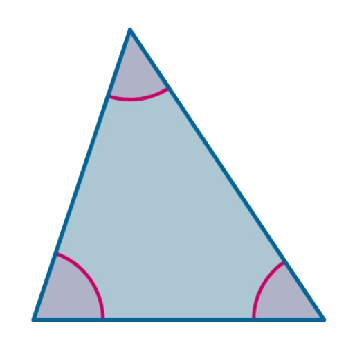
Triángulos obtusángulos
Uno de sus ángulos es obtuso, es decir, mide más de 90° lo que le da el nombre al triángulo. Con que sólo uno de los ángulos sea obtuso, ya es un triángulo obtusángulo.
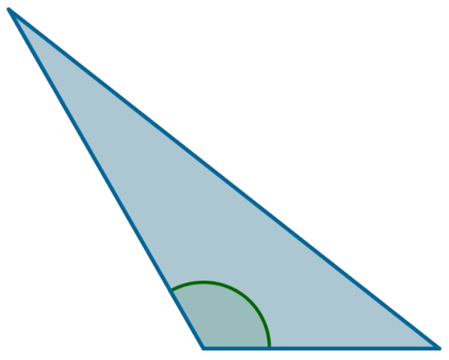
Triángulos rectángulos
Uno de sus ángulos mide90°, es decir, es recto lo que le da el nombre al triángulo. Con que sólo uno de los ángulos sea recto, ya es un triángulo rectángulo.
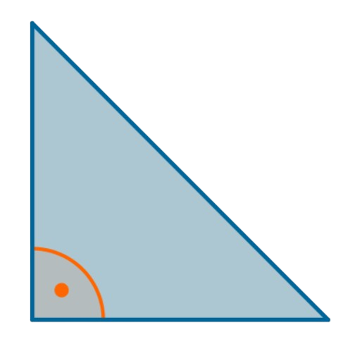
CUADRILÁTEROS
Tipos de cuadriláteros
Trapezoide
Son esos cuadriláteros que no tienen lados paralelos.
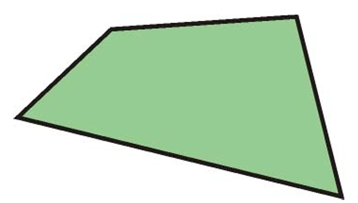
Trapecio
Tiene dos lados paralelos entre sí. Puede ser escaleno si todos sus lados son distintos. También, puede ser isósceles si los dos lados no paralelos tienen la misma longitud y si los ángulos de cada base son iguales (dos ángulos agudos iguales y dos ángulos obtusos iguales). Finalmente, puede ser un trapecio rectángulo si tiene dos ángulos rectos, así como se ve en la figura
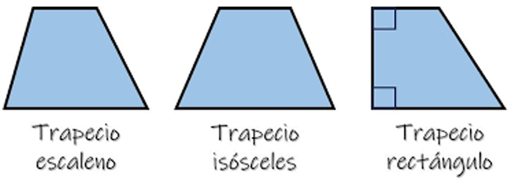
Paralelogramo
Tiene dos pares de lados paralelos. Existen cuatro tipos de paralelogramos: El cuadrado, el rectángulo, el rombo, y el romboide.
1. Cuadrado
Tiene cuatro ángulos rectos de 90° y cuatro lados iguales. Al ser un paralelogramo, podemos ver que hay dos pares de lados paralelos.
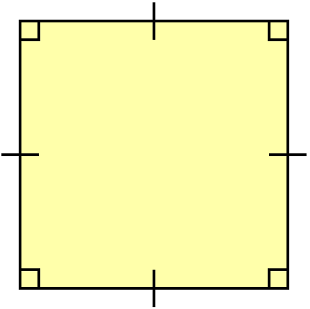
2. Rectángulo
Tiene cuatro ángulos rectos pero, a diferencia del cuadrado, no todos sus lados son iguales. Tiene dos pares de lados iguales, como podemos observar en la imagen. Al ser un paralelogramo, podemos ver que hay dos pares de lados paralelos.
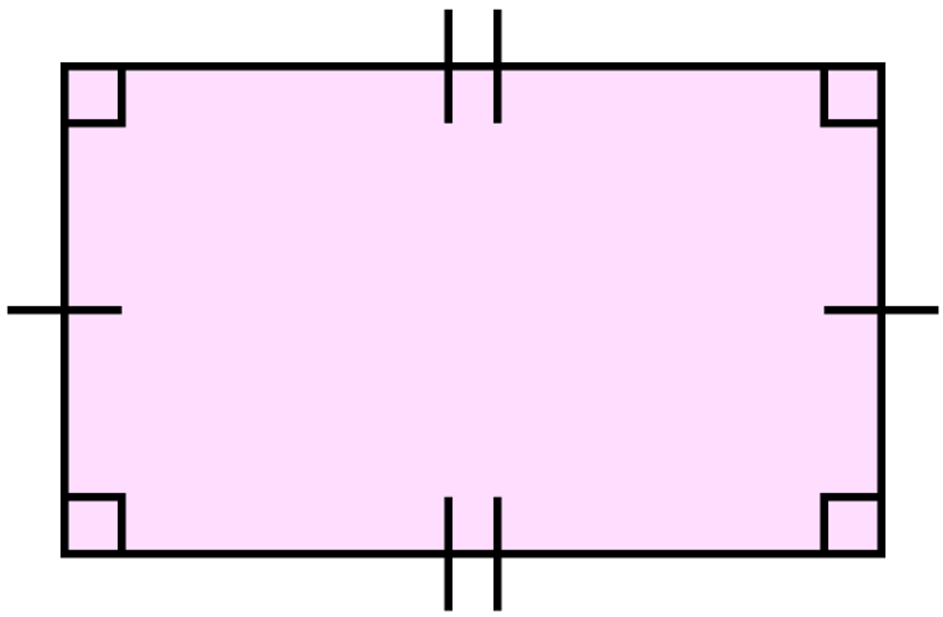
3. Rombo
Tiene cuatro lados iguales pero, a diferencia del cuadrado, no todos sus ángulos son iguales. Tiene dos pares de ángulos iguales, como podemos observar en la imagen. Al ser un paralelogramo, podemos ver que hay dos pares de lados paralelos.
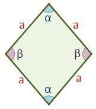
4. Romboide
Tiene dos pares de ángulos opuestos iguales y dos pares de lados opuestos iguales. Al ser un paralelogramo, podemos ver que hay dos pares de lados paralelos.
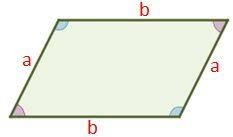
Practicando
NIVEL 1
1. Un triángulo equilátero tiene:
2. En un triángulo isósceles:
3. ¿Cuál de los siguientes no es un paralelogramo?
NIVEL 2
4. Si un triángulo tiene todos sus ángulos menores a 90°, se llama:
5. Un triángulo rectángulo se caracteriza porque:
6. Un trapecio isósceles se distingue porque:
7. ¿Cuál es la diferencia principal entre un rombo y un cuadrado?
NIVEL 3
8. En un triángulo isósceles, el ángulo del vértice mide 40°. ¿Cuánto mide cada uno de los otros dos ángulos?
9. Un triángulo tiene ángulos de 50° y 60°. ¿Cuál es la medida del tercer ángulo?
10. En un paralelogramo:
11. Un romboide tiene:
12. Un cuadrilátero tiene dos pares de lados paralelos y dos ángulos rectos. ¿Qué figura es?